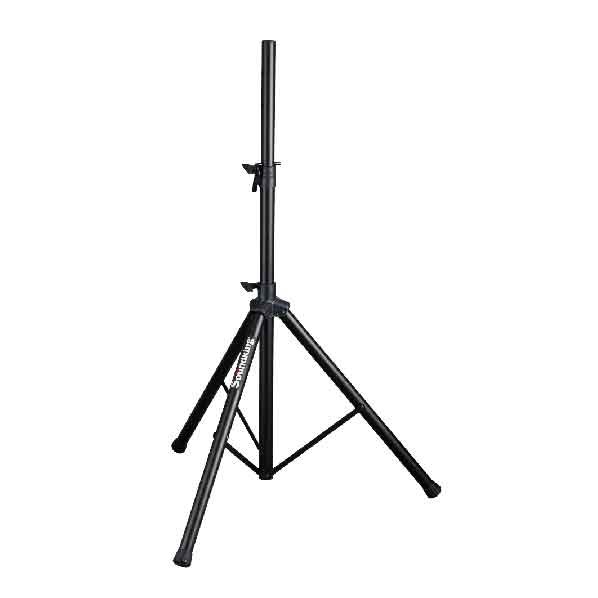

Soundking SB400은 고강도 엔지니어링 플라스틱 마운팅 베이스와 안전 핀 리미터를 적용한 트라이포드 타입의 스틸 스피커 스탠드입니다. 1100–1680 mm 높이 조절로 소형·중형 액티브 스피커를 안정적으로 지지합니다.

고강도 엔지니어링 플라스틱 마운팅 베이스와 안전 핀 리미터를 채택한 스틸 트라이포드 스피커 스탠드. 공연·행사·강의장 등 다양한 현장에서 폭넓게 활용되는 보급형 표준 스피커 스탠드입니다.
SB400은 소형·중형 액티브 스피커를 안정적으로 지지하기 위해 설계된 트라이포드형 스피커 스탠드입니다. 스탠드 상단에는 스피커의 하강을 방지하는 안전 핀(Safety Pin Limiter)이 적용되어 있어 높이 조절 후에도 스피커가 임의로 내려오지 않습니다.
마운팅 베이스는 고강도(High-toughness) 엔지니어링 플라스틱을 사용해 금속 대비 가볍지만 내구성이 높고, 충격과 외력에 대한 저항이 우수합니다. 1100 mm에서 1680 mm까지 연속적인 높이 조절이 가능하여 관객 시야를 확보한 상태에서 스피커의 리스닝 축을 맞추기에 적합합니다.
제조사(Soundking) 공식 카탈로그가 강조하는 SB400의 핵심 포인트입니다.
제조사 공식 카탈로그(2026년 1월판) 기재 사양입니다.
| 모델명 | SB400 |
|---|---|
| 타입 | Tripod Speaker Stand (트라이포드 스피커 스탠드) |
| Height | 1100 – 1680 mm |
| Load Capacity | 40 kg |
| Material | Steel |
| Mounting Base | High-toughness Engineering Plastic |
| Safety | Safety Pin Limiter (안전 핀 리미터) |
| Net Weight | 3.5 kg |
| 권장소비자가 | 96,800 원 / 조 (VAT 포함) |
※ 본 사양은 제조사 Soundking 공식 카탈로그(2026-01-29) 기재 사항을 기준으로 정리되었습니다. 단가는 2026-01-01 스탠드 가격표 기준 권장소비자가(VAT 포함)입니다.
소형·중형 액티브 스피커 운용이 요구되는 이동형·고정형 PA 현장에 적합한 표준 트라이포드 스탠드입니다.